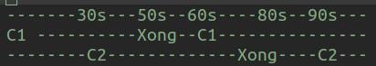

Trong ba vạn sáu ngàn chín trăm service của AWS cung cấp, mỗi cái một kiểu, có this có that. EC2, ALB, RDS, S3, SQS, Lambda là những cái tên "cơ bản" nhất, cũng là phổ biến nhất.
Đặc điểm chung là dễ dùng, đắt, và cũng dễ dính trap!!!
Let's go.
SQS là viết tắt của chữ Simple Queue Service, một dịch vụ cloud khá tương đương với các phần mềm message queue dưới đất như:
- RabbitMQ
- ActiveMQ
- IronMQ

Photo by Nick Fewings on Unsplash
Nếu bạn chưa nghe tên cả 3, thì nó giống như 1 cái ống nước, một đầu gửi thư, đầu kia nhận thư, nếu không ai nhận thì nó nằm trong cái ống.
Vì chỉ đơn giản có vậy, nên sau khi tạo 1 cái queue, thì dùng nó chỉ có 3 thao tác:
- gửi message
- nhận message
- xóa message
message có thể là 1 đoạn text format JSON.
PS: bài viết không yêu cầu code Python, chỉ dùng minh họa.
Sử dụng Python lib boto3, mọi chuyện đơn giản đúng như nói. Ví dụ lấy từ tutorial của boto3 https://boto3.amazonaws.com/v1/documentation/api/latest/guide/sqs.html
Tạo SQS queue
sqs = boto3.resource('sqs')
# Create the queue. This returns an SQS.Queue instance
queue = sqs.create_queue(QueueName='test', Attributes={'DelaySeconds': '5'})
# You can now access identifiers and attributes
print(queue.url)
print(queue.attributes.get('DelaySeconds'))
Gửi SQS message
sqs = boto3.resource('sqs')
# Get the queue
queue = sqs.get_queue_by_name(QueueName='test')
# Create a new message
response = queue.send_messages(Entries=[
{
'Id': '1',
'MessageBody': 'world'
},
{
'Id': '2',
'MessageBody': 'boto3',
'MessageAttributes': {
'Author': {
'StringValue': 'Daniel',
'DataType': 'String'
}
}
}
])
Nhận message rồi xử lý và xóa
Một mô hình đơn giản đó là có 1 đầu gửi lệnh tới SQS queue, đầu kia sẽ nhận lệnh và xử lý.
Nhận:
# Get the service resource
sqs = boto3.resource('sqs')
# Get the queue
queue = sqs.get_queue_by_name(QueueName='test')
while True:
# Process messages by printing out body and optional author name
for message in queue.receive_messages(MessageAttributeNames=['Author']):
# Get the custom author message attribute if it was set
author_text = ''
if message.message_attributes is not None:
author_name = message.message_attributes.get('Author').get('StringValue')
if author_name:
author_text = ' ({0})'.format(author_name)
# Print out the body and author (if set)
print('Hello, {0}!{1}'.format(message.body, author_text))
# Let the queue know that the message is processed
message.delete()
Hết tutorial, quá dễ, quá đơn giản!!!
Traps
Hãy thử nghĩ các vẫn đề có thể xảy ra liên quan đến SQS ở đoạn code trên trước khi đọc tiếp, đây chỉ nói về SQS, không nói về code Python.
Trap 1: delete() chưa chắc đã delete message
Ở đây không nói về lỗi network. Đó có lẽ là điều cuối cùng bạn nghĩ tới, khi function delete đôi khi sẽ không delete
Điều này có ghi rõ 2 trường hợp có thể xảy ra chuyện này, và tất nhiên chỉ ai nhìn delete() mà không tin nó sẽ delete mới đọc doc:
Trường hợp 1 là khi dùng SQS standard queue.
For standard queues, it is possible to receive a message even after you delete it. This might happen on rare occasions if one of the servers which stores a copy of the message is unavailable when you send the request to delete the message. The copy remains on the server and might be returned to you during a subsequent receive request. You should ensure that your application is idempotent, so that receiving a message more than once does not cause issues.
Yep, SQS có 2 loại queue, 1 là standard queue (cũ) 2 là FIFO queue mới ra đời vào 2016, sau 12 năm tồn tại của SQS với vô số "bí mật". Standard queue có thể xảy ra trường hợp delete xong mà vẫn còn message.
Nếu ai từng học về cấu trúc dữ liệu trong lập trình, kiểu queue có nghĩa là phải FIFO (first-in first-out), thì queue của AWS có 2 loại là 1 không FIFO và 1 FIFO.
Trường hợp thứ 2, tinh vi hơn:
The ReceiptHandle is associated with a specific instance of receiving a message. If you receive a message more than once, the ReceiptHandle is different each time you receive a message. When you use the DeleteMessage action, you must provide the most recently received ReceiptHandle for the message (otherwise, the request succeeds, but the message might not be deleted).
Tức nếu có
- C1 nhận messageA xử lý,
- rồi C2 nhận messageA xử lý
- C1 delete message -> return success, nhưng không thực sự xóa
- C2 delete message -> nếu không có thằng nào khác (C3, C4...) thì mới xóa.
C1 và C2 có thể nhận cùng 1 message, nếu 1 hệ thống có nhiều worker cùng hoạt động, cùng gọi
SQS, thì ban đầu chỉ C1 nhận được messageA, nhưng sau visibility timeout mặc định 30s, C2 cũng sẽ nhìn thấy messageA.
Chỉ với 1 message có visibility timeout 30s, và 2 worker xử lý mỗi message sau 50s, bạn đã tạo được 1 vòng lặp gần vô hạn!

Trap2
receive_messages kể cả không nhận được message nào, cũng mất phí. Nhìn chung thì
cứ gọi API của AWS là tính phí rồi, nên cái này không đến nỗi quá bất ngờ.
Nhưng khi chứng kiến các backend engineer viết app "scale"/concurrency/parallel, gọi hàng triệu call mỗi 10 giây,
số tiền bạn phải trả AWS 1 tháng đủ để trả lương kỹ sư ấy cả năm.
$0.4/1_000_000 call => 86400/10 * 0.4 == $3_456/ngày.
Trap N
Ôi dào, đấy là do không chịu đọc doc của từng function thôi.
Okie bạn ơi, còn 31 cái warning 56 cái note trong tài liệu này, chúc vui! https://boto3.amazonaws.com/v1/documentation/api/latest/reference/services/sqs.html
Còn trang tutorial thân thiện, thì không có gì. https://boto3.amazonaws.com/v1/documentation/api/latest/guide/sqs.html
Kết luận
AWS dễ, mà trap everywhere, và mỗi bài học phải được trả bằng tiền, rất nhiều tiền!
Có trong tay full các chứng chỉ cloud của 1 nhà cung cấp cloud hàng đầu (không phải AWS), tôi không tin có chứng chỉ nào dạy cho bạn những điều này.
Đó là việc của "best practice", của các chuyên gia tư vấn sẽ tới thăm bạn và xin cục tiền.
PS: Nếu lỗi nào có được đào tạo khi luyện thi các chứng chỉ của AWS, các chuyên gia AWS full chứng chỉ vui lòng PM mình để update vào đây, tạo động lực thi chứng chỉ cho quần chúng.
Happy crying!
Hết.
HVN at http://pymi.vn and https://www.familug.org.